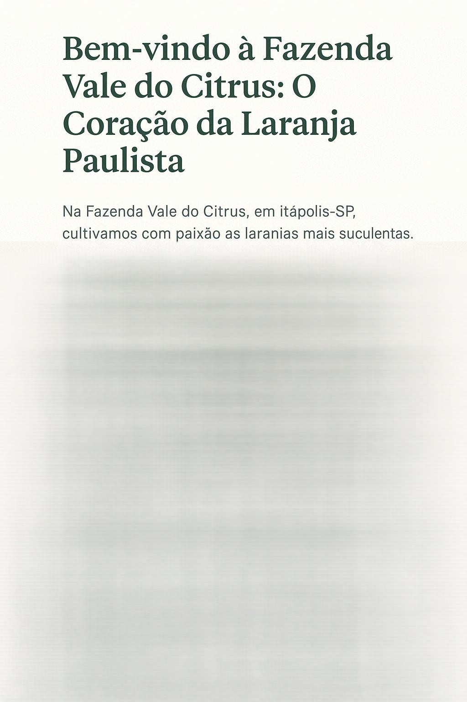

Processo de Seleção e Lavagem
Início
Produção
Processo
Logística
Colheita Manual:
Evita danos e preserva a fruta
Seleção Rigorosa:
Apenas laranjas de alta qualidade
Lavagem e Sanitização:
Higienização com controle
Embalagem Segura:
Caixas de madeira ventiladas
